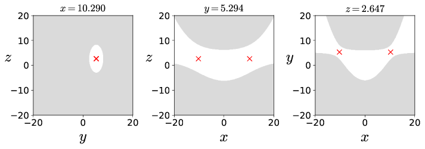
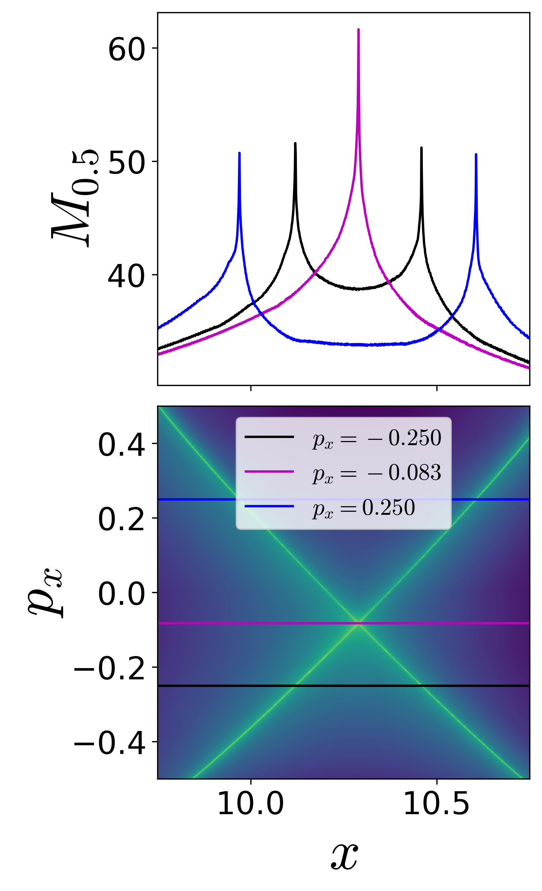
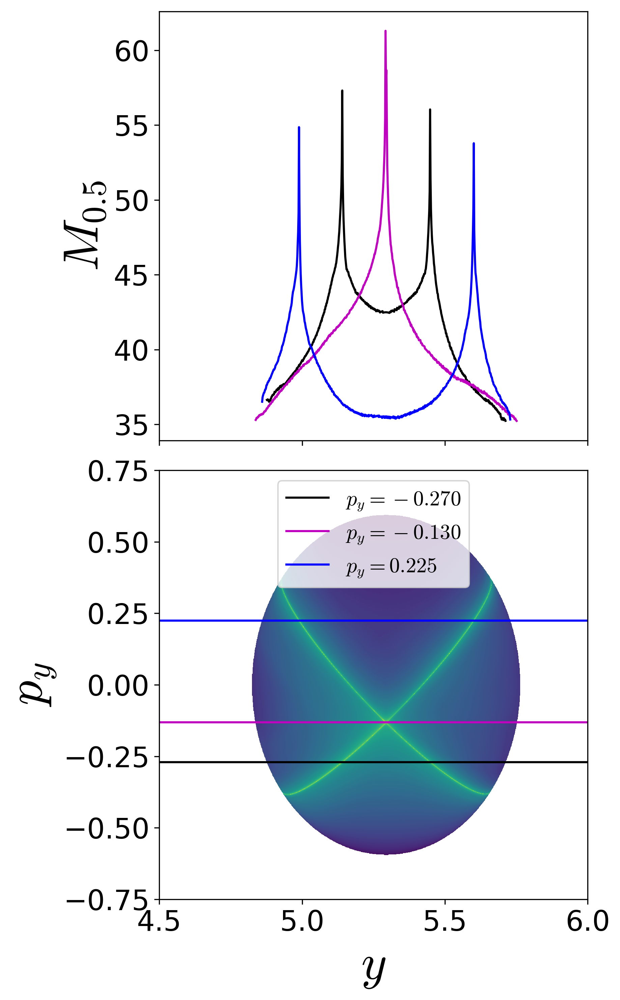
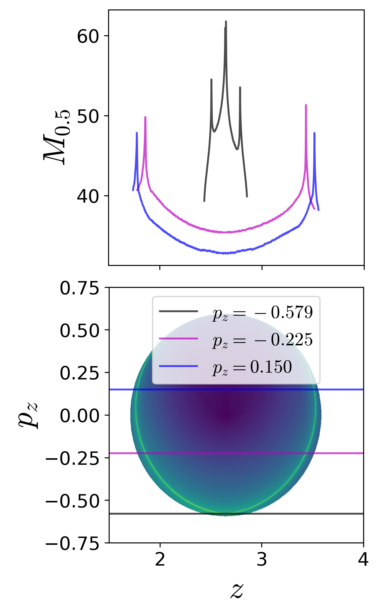

---
redirect_from:
  - "/act3/barbanis-3dof/barbanis-3dof"
title: |-
  Three-DoF Barbanis system
pagenum: 25
prev_page:
  url: /act3/act3.html
next_page:
  url: /act3/system_bath2/system_bath.html
suffix: .md
search: dimensional space phase eqn energy z structures x hamiltonian manifolds dof y fig nhim reference potential surface systems invariant px frac type py omegay omegaz e pz rm system such method lagrangian label omegax epsilon eta eqref eq three escape high its left right using surfaces region trajectory points u well physics present diagnostic configuration initial conditions total equilibrium coordinates figures png width mathbb freedom barbanis used rates ionization transport motion low nonlinear trajectories methods also saddle stable descriptor ld section align hamiltonianbcdof point barbaniscontopoulosdof excess delta r four isoenergetic barbanisdofuxpx n chemical mechanics applied article dynamics underlying hnon heiles

comment: "***PROGRAMMATICALLY GENERATED, DO NOT EDIT. SEE ORIGINAL FILES IN /content***"
---

    <main class="jupyter-page">
    <div id="page-info"><div id="page-title">Three-DoF Barbanis system</div>
</div>
    <div class="jb_cell">

<div class="cell border-box-sizing text_cell rendered"><div class="inner_cell">
<div class="text_cell_render border-box-sizing rendered_html">
<h1 id="Three-degree-of-freedom-Barbanis-system">Three degree-of-freedom Barbanis system<a class="anchor-link" href="#Three-degree-of-freedom-Barbanis-system"> </a></h1><h2 id="Introduction">Introduction<a class="anchor-link" href="#Introduction"> </a></h2><p>It is well-known now that the paradigm of escape from a potential well
and the topology of phase space structures that mediate such escape are
used in a broad array of problems such as isomerization of molecular
clusters [@Komatsuzaki2001], reaction rates in chemical
physics [@Komatsuzaki1999; @WiWiJaUz2001], ionization of a hydrogen atom
under electromagnetic field in atomic physics [@JaFaUz2000], transport
of defects in solid state and semiconductor physics [@Eckhardt1995],
buckling modes in structural mechanics [@Collins2012; @ZhViRo2018], ship
motion and capsize [@Virgin1989; @ThDe1996; @NaRo2017], escape and
recapture of comets and asteroids in celestial
mechanics [@JaRoLoMaFaUz2002; @DeJuLoMaPaPrRoTh2005; @Ross2003], and
escape into inflation or re-collapse to singularity in
cosmology [@DeOliveira2002]. As such a method that can identify the high
dimensional phase space structures using low dimensional surface as
probes can aid in quantifying the escape rates. These low dimensional
surfaces has been shown to be of as <em>reactive islands</em> in chemical
physics and lead to insights into sampling rare transition
events [@patra_classical-quantum_2015; @patra_detecting_2018]. However,
to benchmark the methodology, we first applied it to linear systems
where the closed-form analytical expression of the phase space
structures is known [@naik2019finding]. As the next step, in this
article, we will focus on nonlinear Hamiltonian systems which have been
extensively studied as "built by hand" models of galactic dynamics and
for demonstrating quantum dynamical
tunneling [@barbanis_isolating_1966; @brumer_variational_1976; @davis_semiclassical_1979; @heller_molecular_1980; @waite_mode_1981; @kosloff_dynamical_1981; @contopoulos_simple_1985; @founargiotakis_periodic_1989; @barbanis_escape_1990; @babyuk_hydrodynamic_2003].
The nonlinear Hamiltonian systems considered here have an underlying
Hénon-Heiles type potential with the simplest form of nonlinearity, and
show regular, quasi-periodic, and chaotic trajectories along with
bifurcations of periodic orbits. A Hénon-Heiles type potential has a
well with bottlenecks connecting the region of bounded motion (trapped
region) to unbounded motion (escape off to infinity), and have
rotational symmetry. In addition, these Hénon-Heiles type potentials are
studied as first benchmark nonlinear systems in applying new phase space
transport methods to astrophysical and molecular motion. In this
article, we will present verification of a method that uses trajectory
diagnostic on a low dimensional surface for revealing the phase space
structures in 4 or more dimensions.</p>
<p>Conservative dynamics on an open potential well has received
considerable attention because the phase space structures, normally
hyperbolic invariant manifolds (NHIM) and its invariant manifolds,
explain the intricate fractal structure of ionization
rates [@mitchell_geometry_2003_I; @mitchell_geometry_2003_II; @mitchell_chaos-induced_2004].
Furthermore, the discrepancies in observed and predicted ionization
rates in atomic systems has also been explained by accounting for the
topology of the phase space structures. These have been connected with
the breakdown of ergodic assumption that is the basis for using
ionization and dissociation rate
formulae [@de_leon_intramolecular_1981]. This rich literature on chaotic
escape of electrons from atoms sets a precedent for applying new methods
for finding NHIM and its invariant manifolds in Hamiltonian with open
potential wells
 [@mitchell_analysis_2004; @mitchell_chaos-induced_2004; @mitchell_nonlinear_2009; 
@mitchell_structure_2007; @wang_photoionization_2010].</p>
<p>As we noted earlier, trajectory diagnostic methods which can probe phase
space to detect the high dimensional invariant manifolds have potential
to be of use in many degrees-of-freedom models. One such method is the
Lagrangian descriptors (LDs) that can reveal phase space structures by
encoding geometric property of trajectories (such as, phase space arc
length, configuration space distance or displacement, cumulative action
or kinetic energy) initialised on a two dimensional
surface [@madrid2009; @mendoza2010; @mancho2013; @lopesino2017]. The
method was originally developed in the context of Lagrangian transport
in time-dependent two dimensional fluid mechanics. However, it has also
been successful in locating transition state trajectory in chemical
reactions [@balibrea2016lagrangian; @craven2017lagrangian; @junginger2016lagrangian].
Besides, also being applicable to both Hamiltonian and non-Hamiltonian
systems, as well as to systems with arbitrary time-dependence such as
stochastic and dissipative forces, and geophysical data from satellite
and numerical
simulations [@amism11; @mendoza2014; @ggmwm15; @lopesino2017; @ramos2018].</p>
<p>We present the capability of Lagrangian descriptors for revealing the high 
dimensional phase space structures that are of interest in nonlinear Hamiltonian 
systems with index-1 saddle. These phase space structures include normally 
hyperbolic invariant manifolds (NHIM) and their stable and unstable manifolds, and 
act as codimenision-1 barriers to phase space transport. The method is applied to 
classical two and three degrees-of-freedom Hamiltonian systems which have 
implications for myriad applications in physics and chemistry.</p>
<p>The method of Lagrangian descriptor (LD) is straightforward to implement
computationally and it provides a "high resolution" method for exploring
the influence of high dimensional phase space structure on trajectory
behaviour. The method of LD takes an <em>opposite</em> approach to that of
classical Lyapunov exponent type calculations by emphasizing the initial
conditions of trajectories, rather than their advected locations that is
involved in calculating normalized rate of divergence. This is achieved
by considering a two dimensional section of the full phase space and
discretizing with a dense grid of initial conditions. Even though the
trajectories wander off in the phase space, as the initial conditions
evolve in time, there is no loss in resolution of the two dimensional
section. In contrast to inferring the phase space structures from
Poincaré sections, LD plots do not suffer from loss of resolution since
the affects of the structure are encoded in the initial conditions and
there is no need for the trajectory to return to the section. Our
objective is to clarify the use of Lagrangian descriptors as a
diagnostic on two dimensional sections of high dimensional phase space
structures. This diagnostic is also meant to be used as the preliminary
step in computing the NHIM, their stable and unstable manifolds using
other computational
means [@junginger2016transition; @bardakcioglu2018; @ezra_2018]. In this
article, we will present the method's capability to detect the high
dimensional phase space structures such as the NHIM, their stable, and
unstable manifolds in 2 and 3 DoF Hamiltonian systems.</p>
<h2 id="Development-of-the-Problem-[[sec:model_prob_2dof]]{#sec:model_prob_2dof-label=&quot;sec:model_prob_2dof&quot;}">Development of the Problem [[sec:model_prob_2dof]]{#sec:model_prob_2dof label="sec:model_prob_2dof"}<a class="anchor-link" href="#Development-of-the-Problem-[[sec:model_prob_2dof]]{#sec:model_prob_2dof-label=&quot;sec:model_prob_2dof&quot;}"> </a></h2><p>The model system to consider is the coupled
harmonic potential in 3 dimensions and underlying a 3 degrees-of-freedom
system in [@contopoulos_1994; @farantos_1998]. The Hamiltonian is given
by</p>
\begin{align}
\mathcal{H}(x,y,z,p_x,p_y,p_z) =  T(p_x, p_y, p_z) + V_{\rm BC}(x,y,z) = \frac{1}{2}p_x^2 + \frac{1}{2}p_y^2 + \frac{1}{2}p_z^2  + \frac{1}{2}\omega_x^2 x^2 + \frac{1}{2}\omega_y^2 y^2 + \frac{1}{2}\omega_z^2 z^2 - \epsilon x^2y - \eta x^2 z  
\label{eqn:Hamiltonian_BC_3dof}
\end{align}<p>where $\omega_x^2, \omega_y^2, \omega_z^2, \epsilon, \eta$ are the
parameters related to the coupled harmonic 3 dimensional potential
energy function [@farantos_1998]. In this study, we will fix the
parameters to be
$\omega_x^2 = 0.9, \omega_y^2 = 1.6, \omega_z^2 = 0.4, \epsilon = 
0.08, \eta = 0.01$. The two index-1 saddle equilibria (as shown in the
App. <a href="#sect:coupled_3dof">6</a>{reference-type="ref"
reference="sect:coupled_3dof"}) of the Hamiltonian vector
field <a href="#eqn:three_dof_Barbanis">[eqn:three_dof_Barbanis]</a>{reference-type="eqref"
reference="eqn:three_dof_Barbanis"} are located at</p>
\begin{equation}
\left(\pm \frac{\omega_x\omega_y\omega_z}{\sqrt{2(\epsilon^2\omega_z^2 + \eta^2\omega_y^2)}}, 
\frac{\epsilon \omega_x^2\omega_z^2}{2(\epsilon^2\omega_z^2 + \eta^2\omega_y^2)}, 
\frac{\eta \omega_x^2\omega_y^2}{2(\epsilon^2\omega_z^2 + \eta^2\omega_y^2)},  0, 0, 0 \right) 
\label{eqn:eq_pt_BC_3dof}
\end{equation}<p></p>
<p>and the total energy is
$$E_c = \frac{1}{8} \omega_x^2 \frac{\omega_x^2 \omega_y^2 \omega_z^2}{ \left( \epsilon^2 \omega_z^2 + \eta^2 \omega_y^2 \right)}.$$ 
The equilibrium point at
$(0,0,0,0,0,0)$ is stable and has total energy $0$. For the parameters
used in this study, the equilibrium points are located at
$\left( \pm 10.290, 5.294, 2.647, 
0, 0, 0 \right)$ and $\left( 0, 0, 0, 0, 0, 0 \right)$ and have total
energy, $E_c \approx 
23.824$ and $E = 0$, respectively.</p>
<p>We show the isopotential contours of the potential energy function at
fixed value of $z_{\rm eq}$ in
Fig. <a href="#fig:Barbanis_Contopoulos_3dof">[fig:Barbanis_Contopoulos_3dof]</a>{reference-type="ref"
reference="fig:Barbanis_Contopoulos_3dof"} along with the Hill's regions
for positive excess energy, $\Delta E = 6.000$ and projected on the
configuration space coordinates at the equilibrium point.</p>
<p>{width="25.00000%"}\ {width="70.00000%"}
[[fig:Barbanis_Contopoulos_3dof]]{#fig:Barbanis_Contopoulos_3dof
label="fig:Barbanis_Contopoulos_3dof"}</p>
<p>Fig. 2. (a) Potential energy function underlying the coupled harmonic Hamiltonian~\eqref{eqn:Hamiltonian_BC<em>3dof} at $z</em>{\rm eq} = 2.647$ as isopotential contour and surface. (b) Hill's region for excess energy, $\Delta E = 6.000$ and projected on the configuration space coordinates at the equilibrium point. We note here that the potential energy surface and the Hill's region is plotted by fixing one of the configuration coordinates at the equilibrium point.</p>
<p>Since this model system is conservative 3 DoF Hamiltonian, that is the
phase space is $\mathbb{R}^6$, the energy surface is five dimensional,
the dividing surface is four dimensional, and the normally hyperbolic
invariant manifold (NHIM) is three dimensional, or precisely 3-sphere,
and its invariant manifolds are four dimensional, or precisely
$\mathbb{R}^1 \times \mathbb{S}^3$ or <em>spherical
cylinders</em> [@wiggins_role_2016]. Now, if we consider the intersection of
a two-dimensional section with the five dimensional energy surface in
$\mathbb{R}^6$, we would obtain the one-dimensional energy boundary on
the surface. We will focus our study near the bottleneck by considering
the isoenergetic two dimensional surfaces</p>
\begin{align}
    U_{xp_x}^+ = &amp; \left\{ (x, y, z, p_x, p_y, p_z) \; | \; y = y_{\rm eq}, z = z_{\rm eq}, \; p_y = 0, \; p_z(x, y, z, p_x, p_y; e) &gt; 0 \right\} \label{eqn:Barbanis3dof_uxpx}\\
    U_{yp_y}^+ = &amp; \left\{ (x, y, z, p_x, p_y, p_z) \; | \; x = x_{\rm eq}, z = z_{\rm eq}, \; p_x = 0, \; p_z(x, y, z, p_x, p_y; e) &gt; 0 \right\} \label{eqn:Barbanis3dof_uypy}\\
    U_{zp_z}^+ = &amp; \left\{ (x, y, z, p_x, p_y, p_z) \; | \; x = x_{\rm eq}, y = y_{\rm eq}, \; p_x = 0, \; p_y(x, y, z, p_x, p_z; e) &gt; 0 \right\} \label{eqn:Barbanis3dof_uzpz}
%   \label{eqn:Barbanis3dof_sos_near_saddle}
\end{align}<p>In this 3 DoF system, detecting points on the three dimensional NHIM and
four dimensional invariant manifolds will constitute finding their
intersection with the above two dimensional surfaces.</p>
<h2 id="Revealing-Phase-Space-Structures">Revealing Phase Space Structures<a class="anchor-link" href="#Revealing-Phase-Space-Structures"> </a></h2><p>The Lagrangian descriptor based approach for detecting NHIM in 2 DoF
system can now be applied to the 3 DoF
system <a href="#eqn:Hamiltonian_BC_3dof">[eqn:Hamiltonian_BC_3dof]</a>{reference-type="eqref"
reference="eqn:Hamiltonian_BC_3dof"}. On the five dimensional energy
surface, the phase space structures such as the NHIM and its invariant
manifolds are three and four dimensional,
respectively [@wiggins_role_2016]. As noted earlier, direct
visualization techniques will fall short in 4 or more DoF systems even
if they are successful in 2 and 3 DoF. So, LD based approach can be used
to detect points on a NHIM and its invariant manifolds using low
dimensional probe which are based on trajectory diagnostic on an
isoenergetic two dimensional surface.</p>
<p>It is to be noted that the increase in phase space dimension, leads to a
polynomial scaling in the number of coordinate pairs (that is
$2N(2N-1)(N-1)$ coordinate pairs for $N$ DoF system) and is thus,
impractical to present the procedure on all the combination of
coordinates. We will present the results for the three configuration
space coordinates by combining each with its corresponding momentum
coordinate.</p>
<p>On these isoenergetic surfaces, we compute the variable integration time
Lagrangian descriptor for small excess energy, $\Delta E \approx 0.176$,
or total energy $E = 24.000$, and show the contour maps in
Fig. <a href="#fig:Barbanis3dof_M_pxpypz">[fig:Barbanis3dof_M_pxpypz]</a>{reference-type="ref"
reference="fig:Barbanis3dof_M_pxpypz"}. The maxima identifying the
points on the NHIM and its invariant manifolds can be visualized using
one dimensional slices for constant momenta. This indicates clearly the
initial conditions in the phase space (points on the isoenergetic two
dimensional surfaces in $\mathbb{R}^6$, for
example <a href="#eqn:Barbanis3dof_uxpx">[eqn:Barbanis3dof_uxpx]</a>{reference-type="eqref"
reference="eqn:Barbanis3dof_uxpx"}) that do not leave the saddle region.</p>
<p>{width="33.00000%"}\ {width="33.00000%"}\ {width="33.00000%"}
Fig. 5. Detecting points on the NHIM using variable integration time Lagrangian descriptor on the two dimensional surfaces (a) $U_{xp_x}^+$~\eqref{eqn:Barbanis3dof<em>uxpx}, (b) $U</em>{yp_y}^+$~\eqref{eqn:Barbanis3dof_uypy}, and (c) $U_{zp_z}^+$~\eqref{eqn:Barbanis3dof_uzpz} at excess energy $\Delta E \approx 0.176$ or total energy $E = 24.000$. For this energy value, the saddle region, as defined in Eqn.~\eqref{eqn:var_time_qs}, is taken to be $q_s = [9,12] \times [2.5,7.5] \times [1,4]$ and $\tau = 50$.</p>
<h2 id="Implications-for-reaction-dynamics">Implications for reaction dynamics<a class="anchor-link" href="#Implications-for-reaction-dynamics"> </a></h2><h2 id="References">References<a class="anchor-link" href="#References"> </a></h2>
</div>
</div>
</div>
</div>

 


    </main>
    